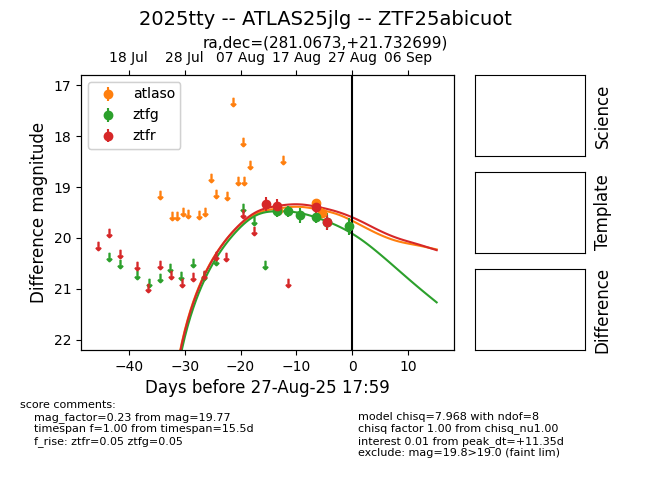

Target 2025tty at 2025-08-27 17:59, see:
FINK: fink-portal.org/ZTF25abicuot
Lasair: lasair-ztf.lsst.ac.uk/objects/ZTF25abicuot
ALeRCE: alerce.online/object/ZTF25abicuot
TNS: wis-tns.org/object/2025tty
YSE: ziggy.ucolick.org/yse/transient_detail/2025tty
alt names
ZTF25abicuot (ztf,fink)
2025tty (tns,yse)
ATLAS25jlg (atlas)
coordinates:
equatorial (ra, dec) = (281.0673,+21.73270)
galactic (l, b) = (51.7441,+11.22693)
photometry
last atlaso=19.50, ztfg=19.77, ztfr=19.69
3 atlaso, 6 ztfg, 4 ztfr detections
